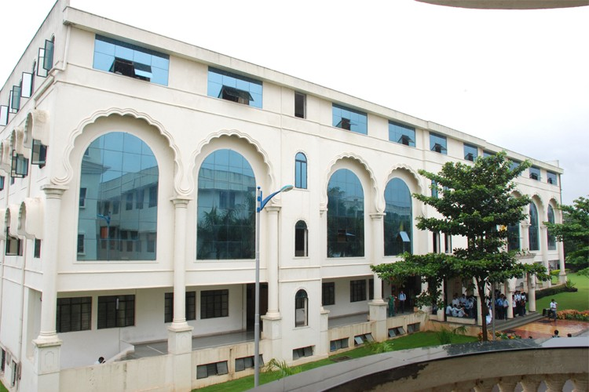
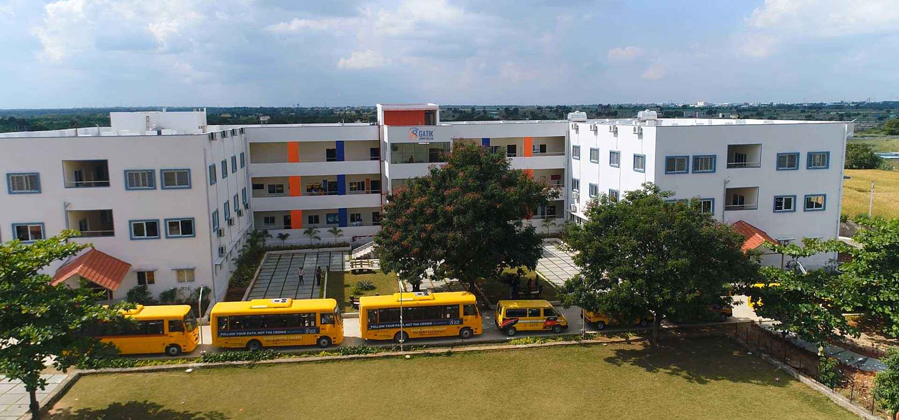
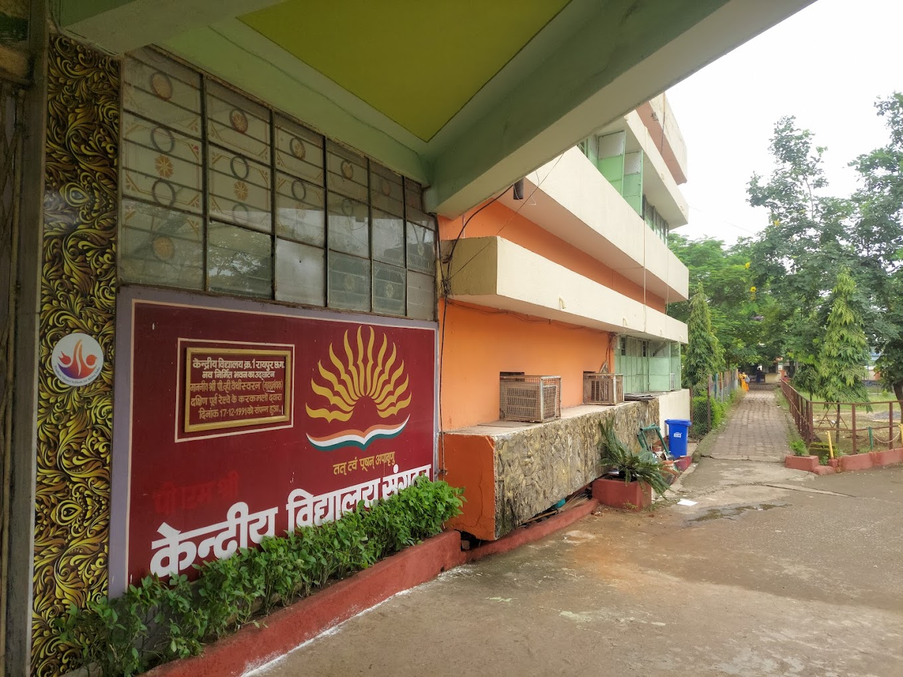

Education
Bachelor of Technology in Computer Science Engineering
MIT Academy Of Engineering (Pune) - 2024 to 2028
Relevant coursework: Creative technologies, Essentials Of Data Science, Data Visualization

Junior College
Decent Junior College (Nagpur) - 11th and 12th Grade
Stream: Science (Physics, Chemistry, Mathematics)

Secondary Education
St.Vincent Pallotti School (Nagpur) - 5th Grade to 10th Grade

Primary Education
Kendriya Vidyalaya (Raipur) - 1st Grade to 5th Grade
